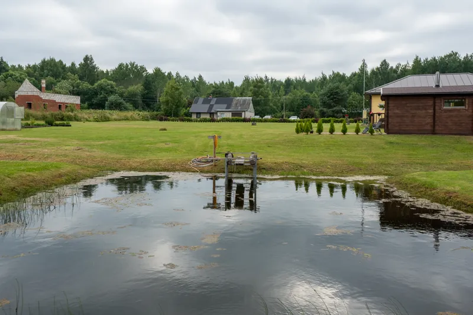
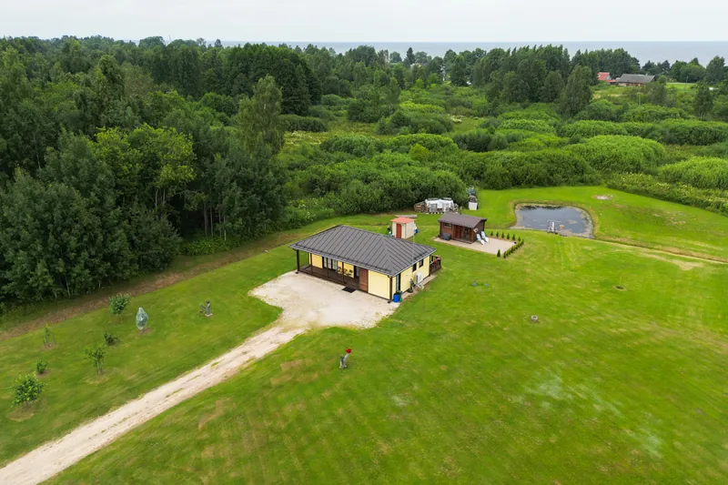

Lühivastus
Maakodu ja suvila puhul ostetakse asukohta ja krunti vähemalt sama palju kui hoonet. Pildista krunt tervikuna – õhust, kõrvalhooned, veekogu, ligipääs – ja tee seda rohelisel ajal. Talvel tehtud maakodu fotod töötavad tunduvalt halvemini.
Linnakorteri ostja vaatab tube. Maakodu ostja vaatab midagi muud: kui kaugel on naaber, kas päike jõuab terrassile, kas tiigis saab ujuda ja kuidas talvel teele saab. Hoone on selles nimekirjas alles kolmas või neljas punkt.
Maakodu kuulutuse suurim viga on see, et krunt jääb näitamata. Fotod on majast, majast lähemalt ja majast teisest nurgast – aga kui suur maa on, kus jooksevad piirid ja mis seal veel on, jääb saladuseks.
See on ka põhjus, miks õhufoto on just maakodu puhul kõige tasuvam lisa üldse. Üks kaader ülevalt vastab korraga tervele reale küsimustele, mille jaoks maapealsed fotod ei kõlba.


Maakodu puhul on aastaaja mõju suurem kui üheski teises kinnisvaraliigis. Ostja ostab suveunistust – ja lumine või hall foto ei müü suveunistust.
| Aeg | Kuidas töötab |
|---|---|
| Mai–august | Parim. Roheline, pikk päev, aed elus. |
| September | Hea, sügisvärvid töötavad maakodu puhul eriti hästi. |
| Oktoober–november | Nõrk. Paljad puud, hall taevas, aiast ei paista midagi. |
| Detsember–veebruar | Puhta lumega töötab, sulaga mitte. |
| Märts–aprill | Kollane muru. Kõige tänamatum aeg. |
Praktiline soovitus. Kui plaanid maakodu müüa, pildista see ära suvel – ka siis, kui paned kuulutuse üles alles sügisel või talvel. Fotod ei aegu ja suvine komplekt müüb aastaringselt paremini kui värske novembrikaader.
Maakodu puhul on ligipääs ja kaugus päris küsimused, mitte pisiasjad. Ostja tahab teada:
Kaks-kolm kaadrit sissesõiduteest ja ümbrusest teevad kuulutuse tugevamaks, mitte nõrgemaks. Nad filtreerivad välja need huvilised, kes oleksid niikuinii kohapeal ümber mõelnud.
Suvila interjöör ei pea välja nägema nagu linnakorter. Puitpind, ahi, lihtne mööbel – need on osa sellest, mida ostja otsib. Vale on siin pigem üle poleerida kui alla.
Praktiline pool jääb siiski samaks: päevavalgus, laelambid välja, kaamera nurgas ja loodis. Need reeglid on kirjas vigade artiklis.
Maakodu või suvila müügis? Pildistamine alates 109€, droonivõtted +59€ – maakodu puhul on see peaaegu alati mõistlik lisa. Sõidame üle Eesti.
Vaata hindu